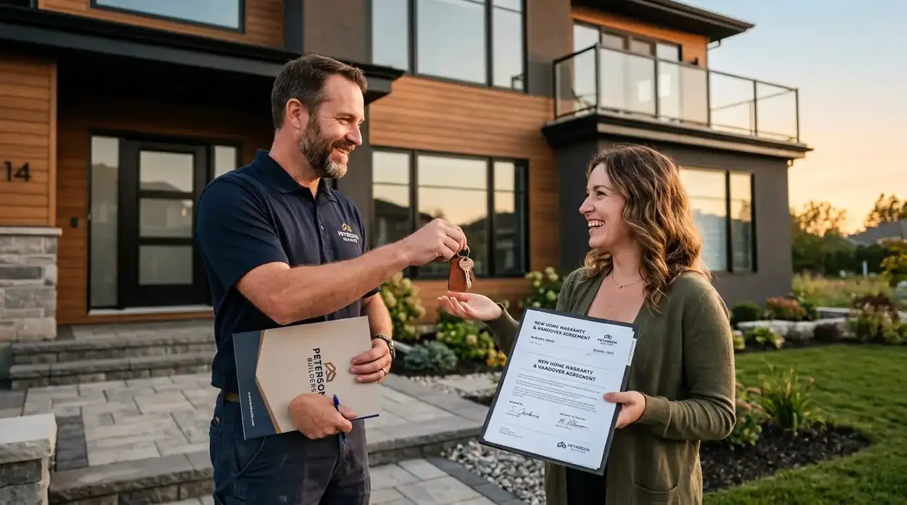

1. Pentingnya Memilih Kontraktor Berpengalaman di Area Sidoarjo
Pembangunan rumah di Sidoarjo menuntut keahlian menangani tanah ekspansif yang mudah kembang-susut serta elevasi peil banjir lingkungan.
Kerap kali pemilik rumah mengeluhkan lantai keramik meledak (popping), dinding retak tembus, atau dinding berjamur akibat naiknya uap air tanah (rising damp). Bersama Kontraktor Bangunan, setiap potensi kegagalan struktur diantisipasi sejak awal.
Kami mengukur elevasi peil lantai dasar minimal 60-100 cm di atas as jalan perumahan Sidoarjo, mengaplikasikan aditif waterproofing pada sloof gantung, serta menggunakan tulangan besi ulir SNI full dengan selimut beton tebal.
- Uji Strauss Pile: Pastikan titik kolom utama rumah 2 lantai di Sidoarjo ditopang strauss pile minimal sedalam 4-6 meter untuk menghindari penurunan pondasi.
- Waterproofing Dak: Gunakan waterproofing semen fleksibel 2 komponen pada dak talang dan kamar mandi lantai 2 sebelum pemasangan keramik.
- Cek Peil Banjir: Konsultasikan sejarah genangan air jalan perumahan dengan warga sekitar sebelum menetapkan elevasi lantai dasar rumah.
2. Tahapan Transparan Bangun Rumah Bersama Kontraktor Bangunan
Proses kerja kami dibangun di atas transparansi komunikasi, ketepatan jadwal Kurva S, dan kemudahan bagi klien.
Dimulai dari survei lokasi gratis di kavling Anda di Sidoarjo, dilanjutkan dengan pembuatan konsep 3D fotorealistik dan penyusunan RAB detail. Setelah penandatanganan SPK resmi, pekerjaan lapangan dipantau mandor bersertifikat dengan laporan foto mingguan.
Sebelum serah terima kunci, kami melakukan uji fungsi bersama (commissioning) terhadap kelistrikan, tekanan air, kelancaran buangan limbah, dan kekedapan jendela kaca.

Pekerjaan pembesian balok sloof dan kolom struktur beton bertulang rumah 2 lantai di Sidoarjo.
3. Pilihan Paket Pembangunan Rumah Tinggal di Sidoarjo
Tersedia pilihan paket fleksibel yang disesuaikan dengan preferensi gaya arsitektur dan pagu anggaran Anda.
Tabel berikut menyajikan perbandingan paket pembangunan rumah mulai dari standar minimalis, kelas menengah premium, hingga rumah mewah bertingkat.
| Spesifikasi / Fitur | Paket Standar Minimalis | Paket Premium Modern | Paket Mewah / Klasik Tropis |
|---|---|---|---|
| Estimasi Biaya / m² | Rp 3.500.000 – Rp 4.200.000 | Rp 4.300.000 – Rp 5.500.000 | Rp 5.600.000 – Rp 7.500.000+ |
| Pondasi Bawah | Batu Belah + Footplate Cakar Ayam | Cakar Ayam + Strauss Pile Dia. 25-30 | Strauss Pile Dalam + Pile Cap Masif |
| Struktur Beton | Mutu K-225 Manual Mix Terstandar | Ready Mix K-250 / K-300 Slump 12 | Ready Mix K-300 + Aditif Kedap Air |
| Dinding & Partisi | Bata Ringan Citicon / GE t=10cm | Bata Ringan + Plester Aci Semen Instan | Bata Merah Bakar Super / Bata Ringan |
| Lantai Utama | Granit Tile 60x60 motif Polos | Granit Tile 80x80 Glazed Polished | Marmer Alam / Granit Slab 100x100 |
| Garansi Struktur | 6 Bulan | 12 Bulan (1 Tahun Penuh) | 24 Bulan (2 Tahun Penuh) |
4. Legalitas Surat Perjanjian Kerja (SPK) & Bantuan PBG Sidoarjo
Seluruh kesepakatan dituangkan dalam dokumen kontrak berkekuatan hukum dengan pendampingan izin PBG SIMBG.
Draf SPK kami memuat rincian termin pembayaran bertahap sesuai persentase progres fisik riil di lapangan. Tim perizinan kami juga membantu upload berkas teknis arsitektur dan struktur ke sistem SIMBG Pemkab Sidoarjo hingga izin PBG terbit resmi.
Pertanyaan yang Sering Diajukan (FAQ)
Kesimpulan Praktis
Membangun rumah di Sidoarjo adalah investasi berharga seumur hidup yang memerlukan jaminan mutu konstruksi dan ketenangan pikiran. Jangan pertaruhkan impian keluarga Anda pada tukang tanpa ikatan kontrak resmi.
Konsultasikan rencana hunian impian Anda sekarang bersama Kontraktor Bangunan. Dapatkan layanan survei lokasi gratis dan draf estimasi RAB transparan.